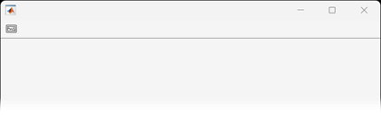
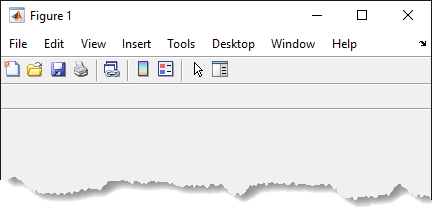
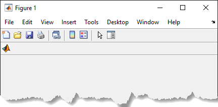
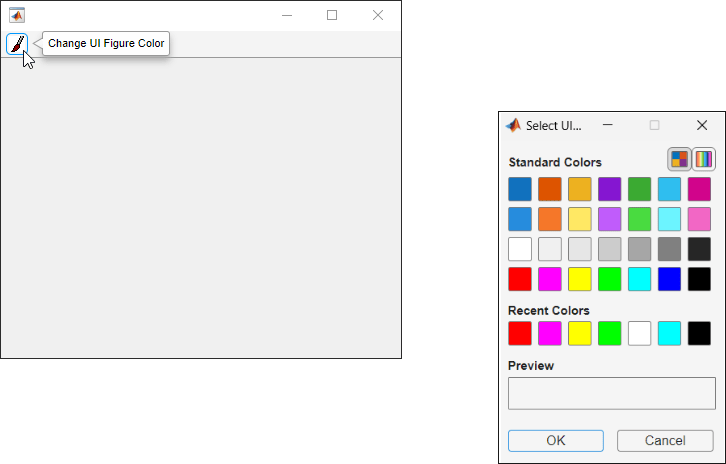

uipushtool
Create push tool in toolbar
Description
pt = uipushtoolPushTool object.
If the current figure does not have a child toolbar, then MATLAB® creates one in the current figure to serve as the parent. If a figure created
with the figure function does not exist, then MATLAB creates one and calls the uitoolbar function to create a
toolbar to serve as the parent.
Push tools behave like push buttons. When you click them, they appear to depress until you release the mouse button.
pt = uipushtool(___,Name,Value)
Examples
Create a UI figure by calling the uifigure function. Create a
toolbar in the UI figure.
fig = uifigure; tb = uitoolbar(fig);

Add a push tool to the toolbar. The push tool displays the default icon.
pt = uipushtool(tb);

Add an icon to the push tool by setting the Icon property to the
image file peppers.png.
pt.Icon = "peppers.png";

Create a figure by calling the figure function. Add a toolbar
to the figure. It appears below the default figure toolbar.
f = figure; tb = uitoolbar(f);

Create a push tool in the toolbar. Read a new icon from the indexed image file,
matlabicon.gif. Convert the indexed image to an RGB truecolor image
array. Add the icon to the push tool by setting the CData property to
the truecolor image
array.
pt = uipushtool(tb); [img,map] = imread(fullfile(matlabroot,... 'toolbox','matlab','icons','matlabicon.gif')); ptImage = ind2rgb(img,map); pt.CData = ptImage;

Create a push tool that opens the uisetcolor
dialog box when you click it. Change the background color of the UI figure to the color
selected from the color picker.
First, create a program file called colorPickerPushTool.m. Within
the program file:
Create a UI figure.
Create a toolbar in the UI figure.
Create a push tool in the toolbar.
Add an appropriate icon to the push tool by setting the
Iconproperty value to the full file path topaintbrush.gif.Create a tooltip for the push tool.
Set the
ClickedCallbackproperty to a function handle that references a callback function calledcolorToolClicked.Create a callback function called
colorToolClicked. In it, call theuisetcolorfunction so that a color picker dialog box opens when you click the push tool in the toolbar. Set the default color of the color picker to be the color of the UI figure and specify the title of the color picker as'Select UI Figure Color'. Make the UI figure the current figure so that it displays on top of all other figures.
function colorPickerPushTool fig = uifigure('Position',[350 500 400 300]); tb = uitoolbar(fig); pt = uipushtool(tb); pt.Icon = fullfile(matlabroot,'toolbox','matlab','icons','paintbrush.gif'); pt.Tooltip = 'Change UI Figure Color'; pt.ClickedCallback = @colorToolClicked; function colorToolClicked(src,event) c = uisetcolor(fig,'Select UI Figure Color'); figure(fig) end end
Run colorPickerPushTool. Click the push tool to open the color
picker. Then, select a color to change the background color of the UI figure.
colorPickerPushTool

Input Arguments
Name-Value Arguments
Tips
Toolbarobjects (and their childPushToolandToggleToolobjects) do not appear in figures whoseWindowStyleproperty is set to'modal'. If a figure containing a toolbar child has itsWindowStylechanged to'modal', the toolbar child still exists in theChildrenproperty of the figure. However, the toolbar does not appear whileWindowStyleis set to'modal'.Unlike
UIControlpush buttons, push tools do not set the figureSelectionTypeproperty to'open'on the second click.